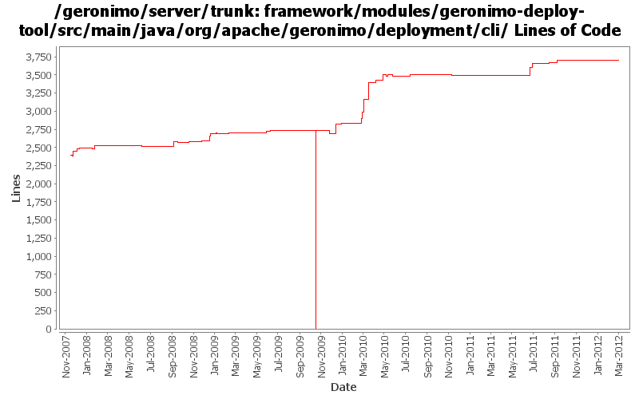

[root]/framework/modules/geronimo-deploy-tool/src/main/java/org/apache/geronimo/deployment/cli

| Author | Changes | Lines of Code | Lines per Change |
|---|---|---|---|
| Totals | 220 (100.0%) | 5527 (100.0%) | 25.1 |
| djencks | 89 (40.5%) | 3042 (55.0%) | 34.1 |
| gawor | 32 (14.5%) | 738 (13.4%) | 23.0 |
| genspring | 10 (4.5%) | 612 (11.1%) | 61.2 |
| xuhaihong | 35 (15.9%) | 438 (7.9%) | 12.5 |
| rickmcguire | 22 (10.0%) | 249 (4.5%) | 11.3 |
| rwonly | 10 (4.5%) | 193 (3.5%) | 19.3 |
| linsun | 7 (3.2%) | 106 (1.9%) | 15.1 |
| vamsic007 | 2 (0.9%) | 66 (1.2%) | 33.0 |
| dwoods | 2 (0.9%) | 33 (0.6%) | 16.5 |
| ashishjain | 1 (0.5%) | 16 (0.3%) | 16.0 |
| kevan | 3 (1.4%) | 11 (0.2%) | 3.6 |
| violalu | 2 (0.9%) | 10 (0.2%) | 5.0 |
| xiaming | 2 (0.9%) | 7 (0.1%) | 3.5 |
| gdamour | 1 (0.5%) | 6 (0.1%) | 6.0 |
| jdillon | 2 (0.9%) | 0 (0.0%) | 0.0 |
GERONIMO-6286 some reasonable changes that reflect multiple instances scenario in mind, though those gogo commands not work now, provided by Russell, for 3.0 trunk
7 lines of code changed in 2 files:
GERONIMO-6251 work on geronimo-maven-plugin. Use jmxrmi connector from karaf, add DeployerGBean in (slightly inappropriate) j2ee-deployer
1 lines of code changed in 1 file:
GERONIMO-6240 Update to changed jline and moved shell annotations
1 lines of code changed in 1 file:
GERONIMO-6168 Fix illegalArgumentException when redirect undeploy output to a file
3 lines of code changed in 1 file:
GERONIMO-5708 Track: Unlock keystore command line utility does not work with Configured Encryption. Patch from Yi Xiao
56 lines of code changed in 1 file:
Use throwable as the catch type, and only print the stack tarce while debug option is opened
5 lines of code changed in 1 file:
1. Use the same configuration with karaf shell to disable jline terminal, and construct it from Geronimo side directly
2. Catch more exception types to support console fallback
8 lines of code changed in 1 file:
GERONIMO-6058 Replace StringBuffer usage with StringBuilder
2 lines of code changed in 1 file:
GERONIMO-5764 record the bundles in startup.properties and add "deploy uninstall-bundle" cli
62 lines of code changed in 3 files:
GERONIMO-5764 fix the cyclic reference and add ASF license header
16 lines of code changed in 1 file:
GERONIMO-5764 Support Bundles Deployment
114 lines of code changed in 4 files:
GERONIMO-5911 java.lang.ClassCastException while printing info to the console
5 lines of code changed in 1 file:
GERONIMO-5885 Upgrade karaf from 2.1.2 to 2.2.1-SNAPSHOT
7 lines of code changed in 1 file:
GERONIMO-5579 a. Wrap the default rmi urlContextFactory b. Enable multiple RemoteDeploymentManager in the same vm of the server runtime
9 lines of code changed in 2 files:
a bit code cleanup
0 lines of code changed in 1 file:
fix build break caused by r1022033
1 lines of code changed in 1 file:
GERONIMO-5638 Remove the encrypt(String) method from ConfiguredEncryption
1 lines of code changed in 1 file:
GERONIMO-5421: GoGo command for unlock-keystore plus other related fixes and improvements. Initial patch from Chi Runhua
33 lines of code changed in 4 files:
GERONIMO-5397: New line fixes. Patch from Forrest Xia
2 lines of code changed in 1 file:
GERONIMO-5335: Ensure EncryptionManager.decrypt() is called with the right context classloader. Also reduce code duplication in deployer and shutdown tools
48 lines of code changed in 3 files:
GERONIMO-4792 deploy --inPlace - wrong error message for non-existing folders, patch from Jeff
2 lines of code changed in 1 file:
GERONIMO-5295 Fix for trunk
16 lines of code changed in 1 file:
register Main service after the boot configuration is fully initialized
2 lines of code changed in 1 file:
GERONIMO-5213: Fix a bunch of Geronimo Karaf shell commands. Add support for 'embedded' mode where the commands know they are executing in a server shell and do not require a jmx connection
276 lines of code changed in 4 files:
More update due to the change of ConsoleReader
6 lines of code changed in 1 file:
Use jline from karaf-shell in gerronimo-deploy-tool, also some codes clean up
185 lines of code changed in 17 files:
Use JarUtils to replace FileUtils
3 lines of code changed in 1 file:
GERONIMO-5027 Redeploy option for farming. Based on patch from Ashish.
305 lines of code changed in 1 file:
GERONIMO-5156 Command line utility to unlock a keystore and private key (Patch from Ashish Jain)
2 lines of code changed in 1 file:
GERONIMO-5156 Command line utility to unlock a keystore and private key (Based the patch provided by Ashish Jain)
185 lines of code changed in 2 files:
GERONIMO-4896 Commands to a Secure JMX Connector require the SSL keyStorePassword to be specified on command line, modified based on additional improvement patch from Ashish.
80 lines of code changed in 2 files:
GERONIMO-4896 Commands to a Secure JMX Connector require the SSL keyStorePassword to be specified on command line, modified based on patch from Ashish.
93 lines of code changed in 2 files:
https://issues.apache.org/jira/browse/GERONIMO-3003, port #896316 from 22 branch to trunk.
68 lines of code changed in 2 files:
GERONIMO-5009 Enable Java EE package deployment in Geronimo 3.0
0 lines of code changed in 1 file:
GERONIMO-5008 Create util methods for all the Geronimo components
1 lines of code changed in 1 file:
GERONIMO-5008 Create util methods for all the Geronimo components
19 lines of code changed in 3 files:
GERONIMO-4948 To migrate existing geronimo gshell commands to karaf based shell. --- Fix a classloader problem.
8 lines of code changed in 1 file:
flush the console output
2 lines of code changed in 1 file:
GERONIMO-4986 Convert shell commands to gogo command infrastructure.
initial command base classes and the first set of converted groovy scripts.
248 lines of code changed in 21 files:
1) register geronimo-managed mbean server as osgi service, 2) enable osgi jmx bundle to expose rfc139 mbeans, 3) add/update the shutdown command to use rfc139 mbean to stop the container, 4) update the debug properties for jdb to use geronimo defaults
85 lines of code changed in 1 file:
(36 more)